Mentés
Biztonságot keresünk a bajba jutott állatoknak.
Salgótarján · Nógrád vármegye
Bajba jutott, gazdátlan állatokért dolgozunk: biztonságot, állatorvosi segítséget és esélyt adunk nekik egy szerető otthonra.
Ismerd meg a HazavágyókatAmit teszünk
A Karma Állatvédő Alapítvány Salgótarjánban és környékén segíti a bajba jutott állatokat. A mentés mellett fontosnak tartjuk a megelőzést és a felelős állattartást.
Biztonságot keresünk a bajba jutott állatoknak.
Segítjük az állatorvosi ellátást és az ivartalanítást.
Felelős, szerető családot keresünk számukra.
Önkéntesekkel és támogatókkal dolgozunk.
Szerető otthont keresnek
Itt mutatjuk be a sorozat kilenc kutyáját – és velük együtt az örömhíreket is, amikor valamelyikük végre hazatalál.
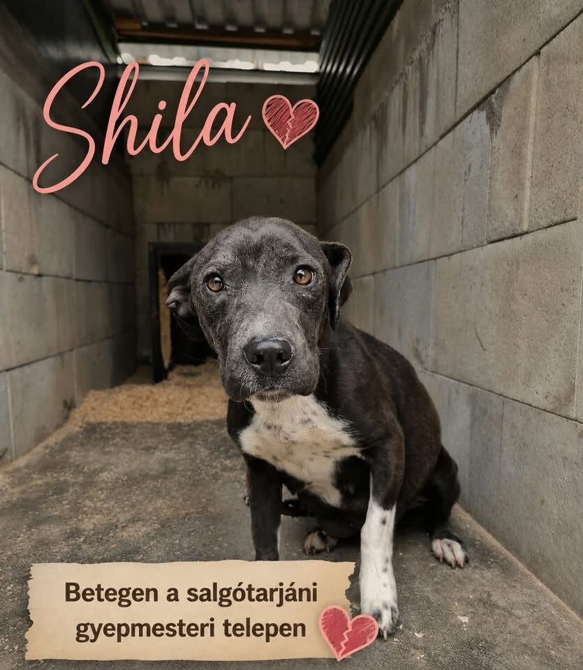
Öleb, labdaimádó és főállású pusziosztó!
A salgótarjáni gyepmesteri telepről Bogner Henriett mentett ki. Betegen kerültem hozzá, de a gondoskodásnak köszönhetően felépültem.
Ma már vidám, játékos kutyalány vagyok: imádom a labdát, az ölben üldögélést és a pusziosztást. Most már csak egy saját család hiányzik, akinek hűséges társa lehetek.
Érdeklődöm Shila iránt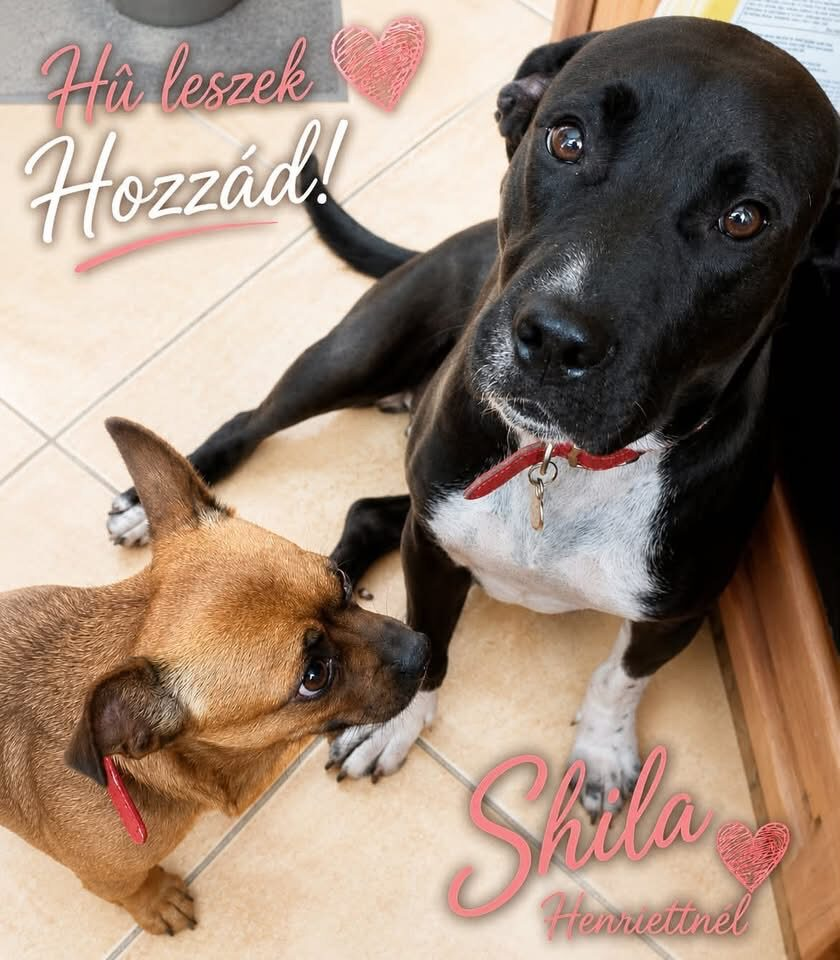
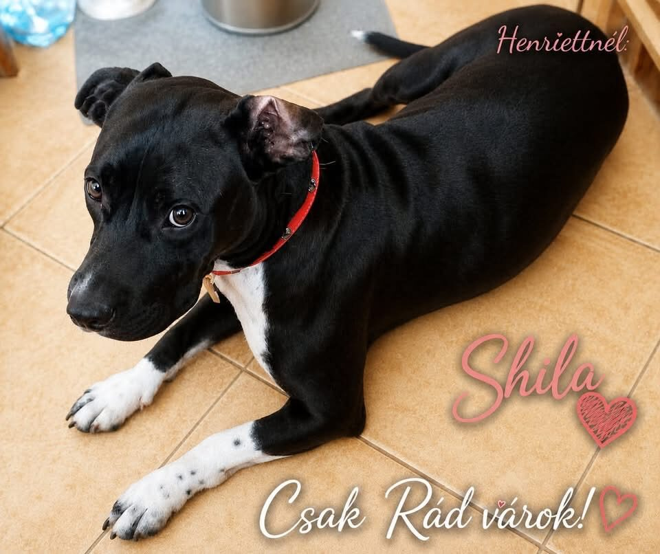
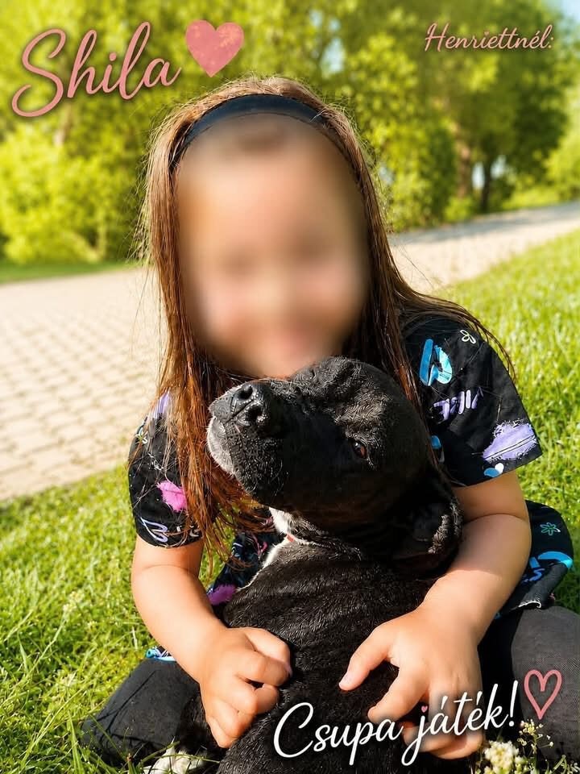
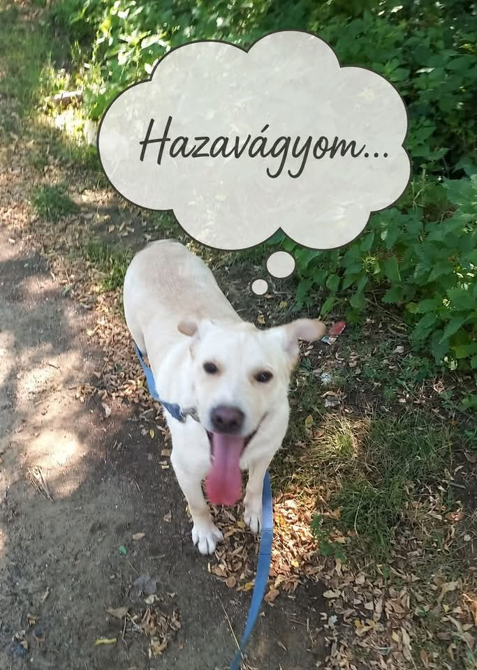
Egy boldog séta végén én is szeretnék végre hazamenni.
A fotó címe akár ez is lehetne: „Egy boldog nap a gazdival”. De Samut nem a gazdija sétáltatja.
A séta végén nem várja meleg otthon. Sem egy saját fekhely. Sem egy simogató kéz. Egy önkéntes ajándékozott neki néhány boldog percet a kennelen kívül: egy rövid sétát és egy kis figyelmet.
Aztán a séta hamar véget ér. Az önkéntesnek mennie kell, Samu pedig nem hazatér, hanem visszakerül a gyepmesteri telep valóságába. Oda, ahol már két hosszú éve csak vár és vár…
Pedig Samu nagyon szeretetreméltó! Imádja az embereket, és más kutyákkal is nagy örömmel barátkozik.
Lehet, hogy Samu fényképe nem véletlenül került ma eléd. Talán éppen te leszel az, aki egy boldog séta végén lehajol hozzá, és azt mondja: „Gyere, kiskutyám! Most már hazamegyünk.”
Érdeklődöm Samu irántSehnsucht nach einem Zuhause – Teil 2
Die Waisen der städtischen Auffangstation Salgótarján
Der Titel dieses Fotos könnte lauten: „Ein glücklicher Tag mit meinem Menschen“. Doch es ist nicht Samus eigener Mensch, der mit ihm spazieren geht.
Am Ende des Spaziergangs wartet kein warmes Zuhause auf ihn. Kein eigenes Körbchen. Keine Hand, die ihn liebevoll streichelt. Eine ehrenamtliche Helferin hat ihm einige glückliche Minuten außerhalb seines Zwingers geschenkt: einen kurzen Spaziergang und ein wenig Aufmerksamkeit.
Doch der Spaziergang ist schnell vorbei. Die Helferin muss gehen – und Samu geht nicht nach Hause. Er kehrt zurück in die kalte, eintönige Welt der ungarischen Auffangstation. Dorthin, wo er seit zwei langen Jahren wartet und wartet …
Dabei ist Samu, dieser etwa vierjährige, kastrierte Rüde, unglaublich liebenswert! Er liebt Menschen und freundet sich auch mit anderen Hunden sehr gerne an.
Vielleicht ist es kein Zufall, dass Samus Foto heute gerade dir begegnet ist. Vielleicht wirst du diejenige oder derjenige sein, der sich am Ende eines glücklichen Spaziergangs zu ihm hinunterbeugt und sagt: „Komm, mein Kleiner! Jetzt gehen wir nach Hause.“
Wenn du das Gefühl hast, dass Samu für den Rest seines Lebens einen Platz in deinem Herzen und deinem Zuhause finden könnte, dann warte bitte nicht länger.
📍 Städtische Auffangstation Salgótarján, Ungarn
📞 Ansprechpartnerin: Bogner Henriett
☎️ +36 20 583 0511
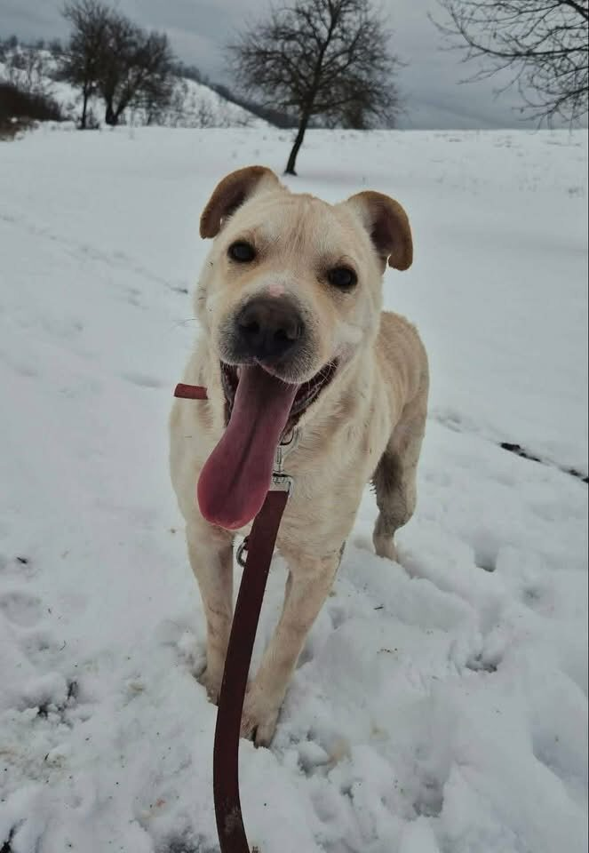
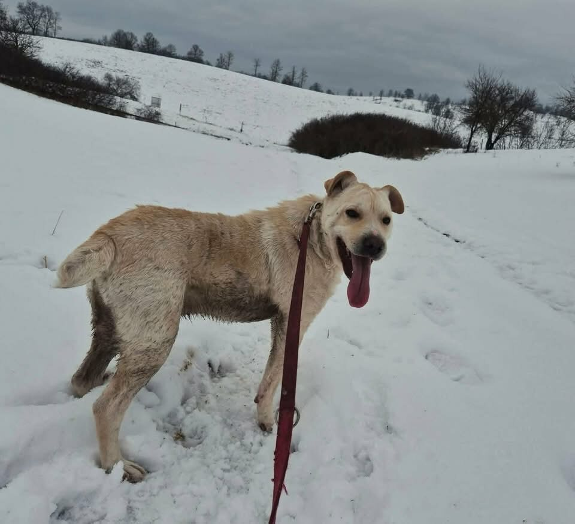
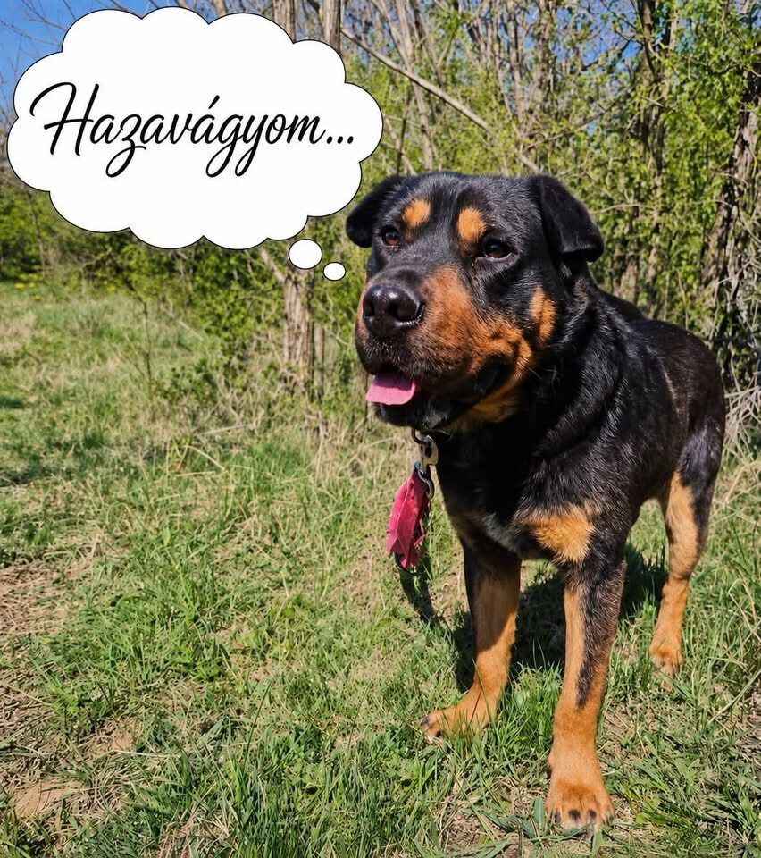
A poszt megjelenése után néhány nappal rátalált a nagy Ő!
Nemrég úgy tűnt, végre Józsikáért is eljön egy család. Gyerekek mellé szerették volna örökbe fogadni, de végül nem őt választották, hanem egy fiatalabb, elevenebb kutyust. Józsika ismét ott maradt.
Pedig nagyon szereti a gyerekeket, emberközpontú, nyugodt és kiegyensúlyozott kutya. Mindenkivel könnyen megtalálja a közös hangot, és más állatokkal is jól kijön.
Türelmes, megnyugtató jelenléte miatt megfelelő képzés mellett akár terápiás munkára is ígéretes lehetne. Nem ugrálja körbe az embert, és nem akar mindenáron kitűnni a többiek közül. Talán éppen ezért siklott át rajta olyan sok tekintet.
Józsika egy teljes évet várt a Salgótarjáni Gyepmesteri Telepen egy békés otthonra, ahol közel lehet az emberekhez. A története végül örömhírrel folytatódott: a poszt megjelenése után néhány nappal rátalált az, aki valóban őt választotta.
Update: Józsika hat sein Zuhause gefunden! Nur wenige Tage nach der Veröffentlichung des Beitrags fand ihn sein Herzensmensch.
Vor Kurzem sah es noch so aus, als würde endlich eine Familie für Józsika kommen. Er sollte zu einer Familie mit Kindern ziehen, doch letztendlich fiel die Wahl nicht auf ihn, sondern auf einen jüngeren, lebhafteren Hund. Józsika blieb erneut zurück.
Dabei liebt er Kinder sehr. Er ist menschenbezogen, ruhig und ausgeglichen. Józsika ist etwa sechs Jahre alt und kommt mit Menschen und anderen Tieren gut zurecht.
Durch sein geduldiges Wesen und seine beruhigende Ausstrahlung könnte er bei entsprechender Ausbildung möglicherweise sogar für die tiergestützte Arbeit geeignet sein. Er drängt sich nicht in den Vordergrund – vielleicht wurde er gerade deshalb so oft übersehen.
Ein ganzes Jahr wartete Józsika in der städtischen Auffangstation von Salgótarján auf ein ruhiges Zuhause. Nun hat seine Geschichte endlich die Fortsetzung bekommen, die wir uns für ihn gewünscht haben.
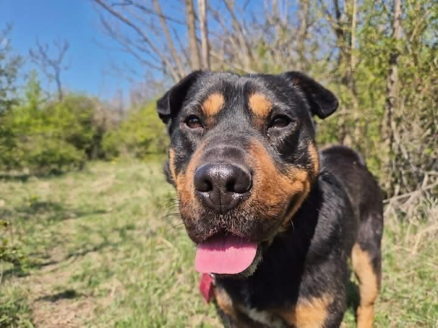
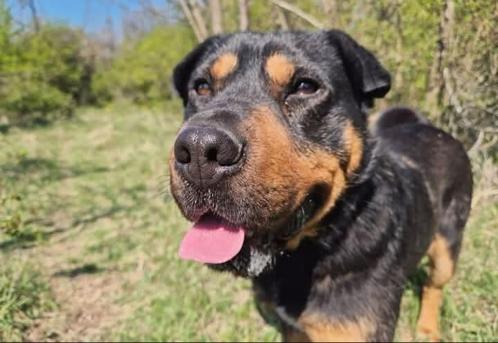
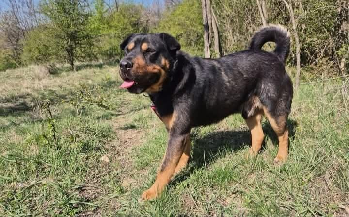
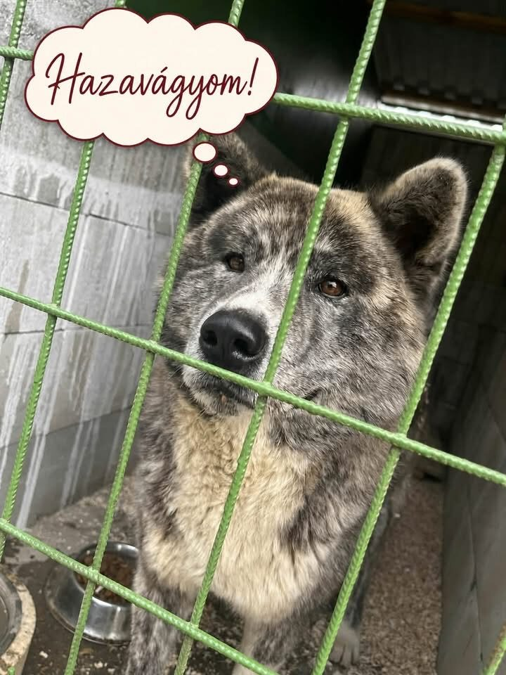
Kutyi Finnországba utazott, ahol egy menhely gondoskodik róla.
Frissítés: Kutyi Finnországba utazott egy menhelyre, ahol biztonságban van, és ahonnan majd szerető családot keresnek számára. Amint új információt kapunk róla, frissítjük az adatlapját. Addig is boldog életet kívánunk ennek a gyönyörűségnek!
A neve Kutyi. De akár Névtelennek is hívhatnánk ezt a nemes szépségű kutyust, hiszen már két éve nem kapott olyan nevet, amelyet valaki szeretettel, csak neki választott.
Két hosszú tél és két forró nyár telt el azóta, hogy gazdi szeretete nélkül él. Ahhoz, aki időt szán rá és megadja neki a szükséges figyelmet, gyorsan közel kerül.
Ha az önkéntesek ideje engedi, bezártságát mindössze 15 percnyi séta szakítja meg – hetente egyszer. Tizenöt perc szabadság. Majd újra bezárul mögötte a kennel ajtaja, és újra közel 168 óra várakozás következik.
Két éven át nézte a rácsokon túli világot és hazavágyott. Most új fejezet kezdődött az életében Finnországban.
Update: Kutyi ist nach Finnland gereist. Dort wird er nun in einem Tierheim versorgt und ist in Sicherheit. Von dort aus wird eine liebevolle Familie für ihn gesucht. Sobald wir neue Informationen erhalten, aktualisieren wir seine Seite. Bis dahin wünschen wir diesem wunderschönen Hund ein glückliches Leben!
Kutyi – der Hund, der noch auf seinen eigenen Namen wartete.
Er wird Kutyi genannt. Doch genauso gut könnten wir ihn „Namenlos“ nennen, denn seit mindestens zwei Jahren hat ihm niemand einen Namen gegeben, der liebevoll und ganz allein für ihn ausgesucht wurde.
Zwei lange Winter und zwei heiße Sommer sind vergangen, in denen er ohne die Liebe eines eigenen Menschen leben musste. Kutyi ist ein etwa sechs Jahre alter Rüde. Er ist freundlich, menschenbezogen, liebevoll und anhänglich. Zu einem Menschen, der sich Zeit für ihn nimmt, fasst er schnell Vertrauen.
Wir suchen für ihn ein Zuhause als Einzelhund. Für einen Haushalt mit Kindern oder anderen Tieren ist er nicht geeignet. Er braucht einen erfahrenen, konsequenten und verantwortungsbewussten Menschen.
Wenn es die Zeit der ehrenamtlichen Helfer erlaubt, wird seine Gefangenschaft durch einen einzigen, nur 15-minütigen Spaziergang unterbrochen – einmal pro Woche. Fünfzehn Minuten Freiheit. Danach schließt sich die Zwingertür erneut hinter ihm, und fast weitere 168 Stunden des Wartens beginnen.
Zwei Jahre lang blickte er durch die Gitterstäbe hinaus in die Welt und sehnte sich nach einem Zuhause. Nun beginnt in Finnland ein neues Kapitel seines Lebens.
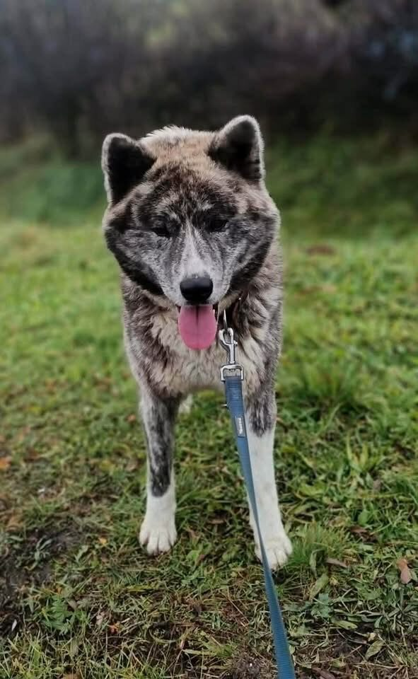
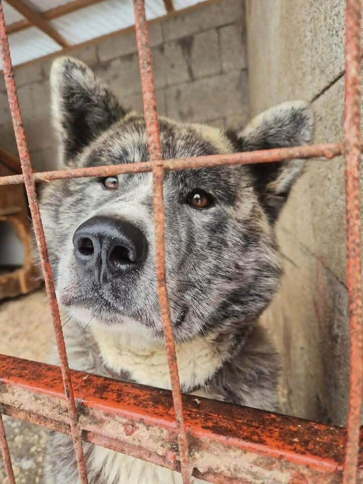
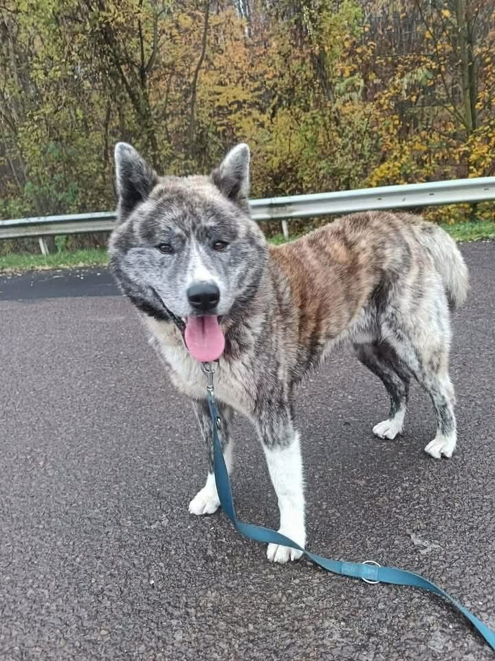
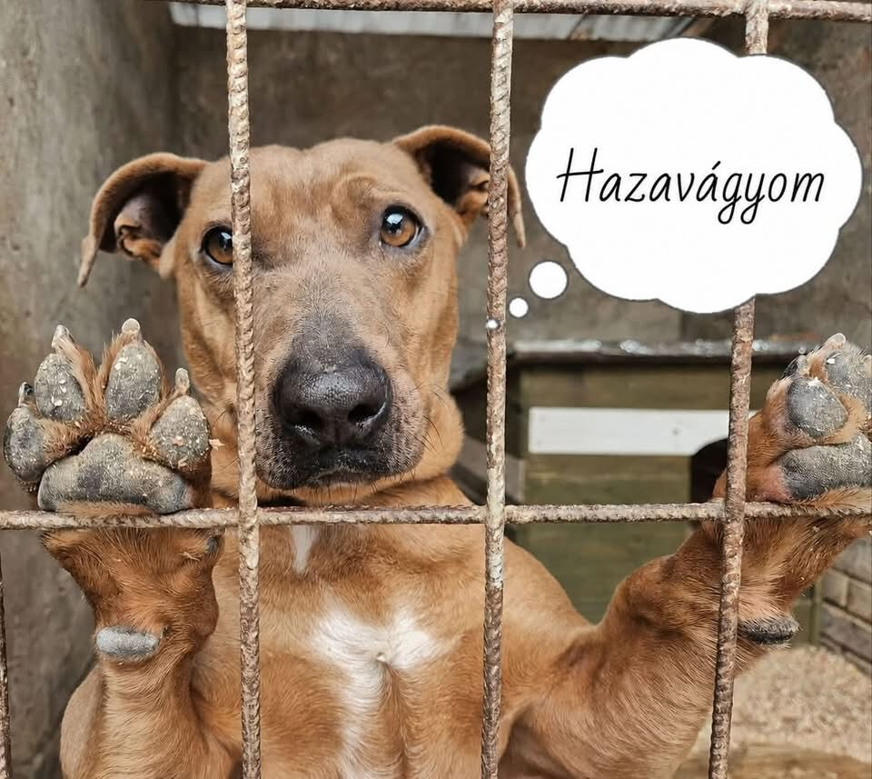
„Maradj még! Ne hagyj itt! Vigyél haza!”
Vajon mit mondana Plútó, ha beszélni tudna? Talán azt, hogy már egy örökkévalóság óta vár arra, hogy valaki végre érte jöjjön. Hogy az éjszakák magányosak, fél, és nem érti, miért nem szereti őt senki úgy, ahogyan csak egy igazi gazdi tud szeretni.
Hetente egyszer, rövid tizenöt percre kinyílik előtte a kennel ajtaja. Végre sétálhat a fűben, érezheti a nap melegét, és arra a néhány percre csak az övé egy ember figyelme. Önfeledt és boldog tizenöt perc a hét végtelennek tűnő 10 080 percéből.
Az egyik séta után, amikor sétáltatója éppen kilépett volna, Plútó ráült a lábfejére, egész testével a lábszárának dőlt, és mélyen a szemébe nézett. Nem lehetett félreérteni: „Maradj még! Ne hagyj itt! Vigyél haza!”
De a sétáltatójának nehéz szívvel ott kellett hagynia. Plútó két hátsó lábára állt, mellső mancsait a rácsra tette, és csak nézte, ahogy távolodik. Mintha azt kérdezte volna: „Miért nem kellek?”
Hazavágyik. Ha a tekintete a szívedig hatolt, és úgy érzed, te tudnád a szomorúságát boldogsággá változtatni, ne késlekedj! Minden rácsok mögött elvesztegetett percért kár.
Érdeklődöm Plútó irántPlútó – ein Blick, der dich in seinen Bann zieht.
Was würde Plútó wohl sagen, wenn er sprechen könnte? Vielleicht würde er erzählen, dass er schon eine Ewigkeit darauf wartet, dass endlich jemand kommt, um ihn zu sich zu holen. Dass die Nächte einsam sind, dass er Angst hat und nicht versteht, warum ihn niemand so liebt, wie nur ein eigener Mensch lieben kann.
Einmal in der Woche öffnet sich für gerade einmal fünfzehn Minuten seine Zwingertür. Endlich darf er über das Gras laufen, die Wärme der Sonne spüren und die ungeteilte Aufmerksamkeit eines Menschen genießen. Fünfzehn glückliche Minuten von den 10.080 Minuten einer Woche.
Nach einem Spaziergang setzte sich Plútó auf den Fuß seiner Gassigängerin, lehnte sich mit seinem ganzen Körper an ihr Bein und sah ihr tief in die Augen: „Bleib noch! Lass mich nicht hier! Nimm mich mit nach Hause!“
Doch sie musste ihn zurücklassen. Plútó stellte sich auf seine Hinterbeine, legte seine Vorderpfoten an das Gitter und sah ihr nach. Als wollte er fragen: „Warum will mich niemand?“
Plútó ist vier Jahre alt, wiegt 15 Kilogramm und sollte vorzugsweise als Einzelhund gehalten werden oder zu einem Menschen kommen, der bereit ist, mit ihm eine Hundeschule zu besuchen.
Er sehnt sich nach einem Zuhause. Jede weitere Minute hinter Gittern ist eine verlorene Minute.
📍 Salgótarján, Ungarn
💬 Ansprechpartner: Sirkó Attila – Messenger
☎️ +36 20 583 0511
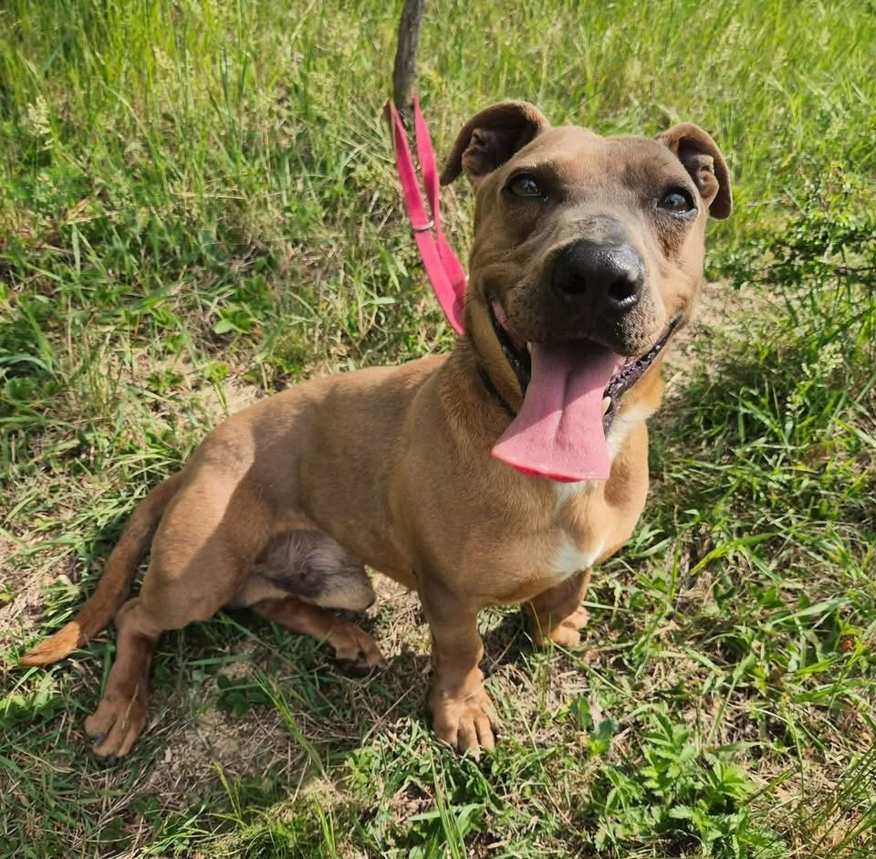
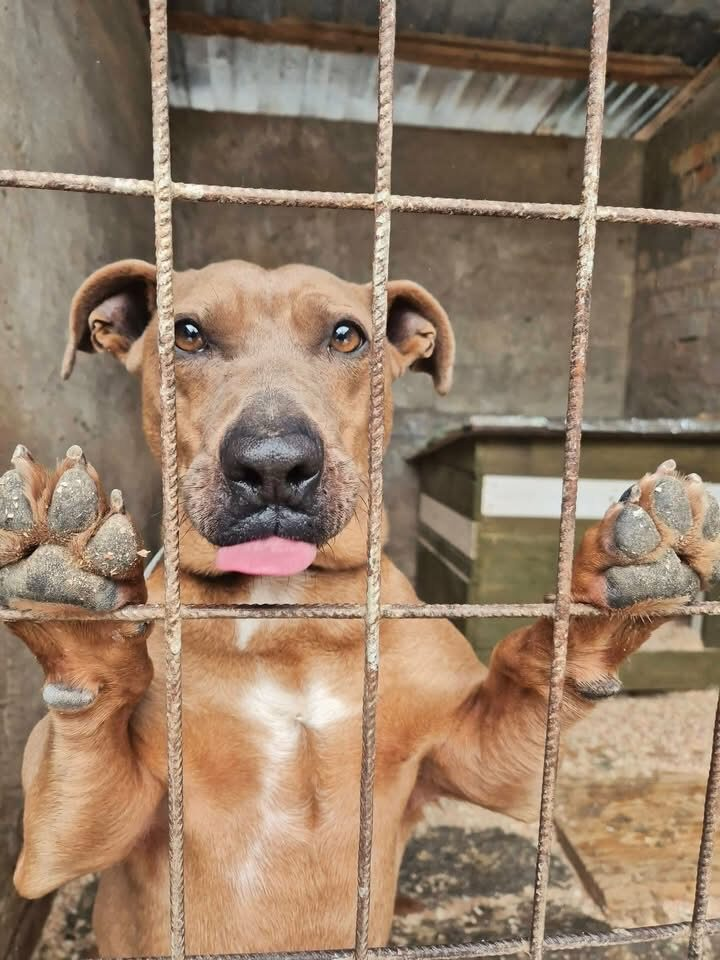
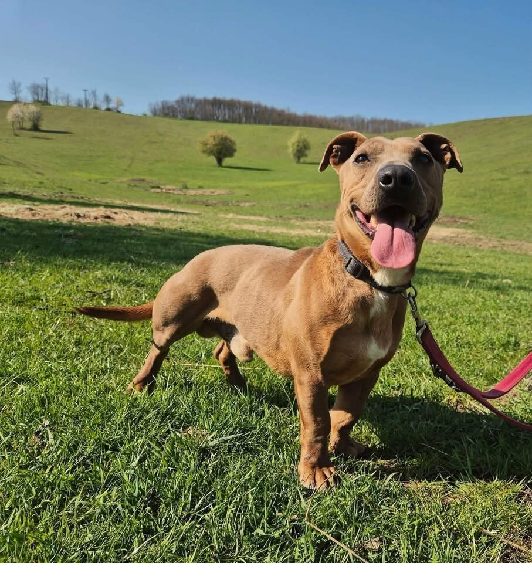
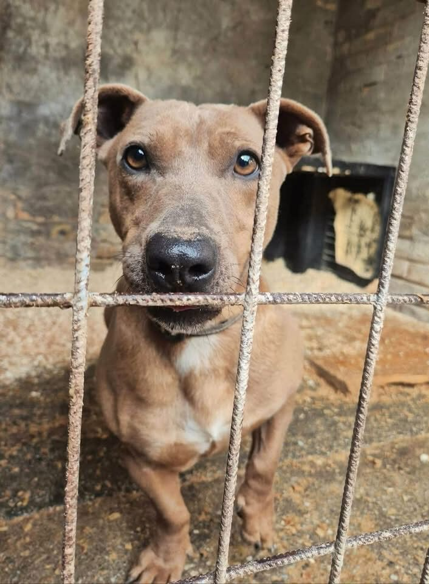
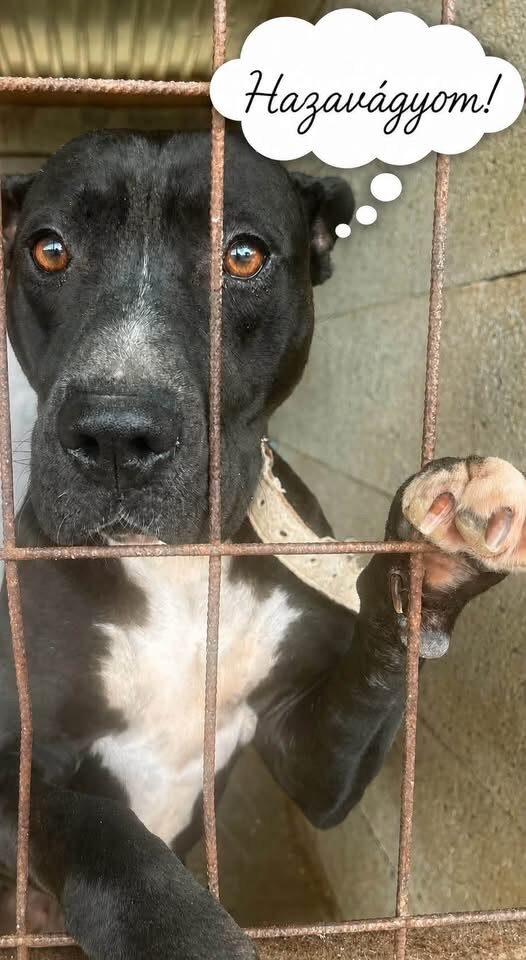
Nem éppen öleb méretű, de ő erről mit sem tud.
Amikor Léna a gyönyörű barna szemeivel rád néz, mintha csak ezt kérdezné: „Ugye, az öledbe bújhatok?” Ugyanis ez a kedvenc elfoglaltsága.
A gondozó elmondása szerint Léna könnyei a kennel rácsai mögött addig folynak, amíg oda nem megy hozzá. Milyen hosszú lehet minden egyes perc annak a kutyának, aki ennyire vágyik a szeretetre, mégis újra és újra egyedül marad?
Bár nem éppen öleb méretű, ő erről mit sem tud: legszívesebben mindig ölben lenne. Imádja az embereket, gyermek- és kutyabarát, pórázon szépen sétál. Ha szükséges, időnként egyedül is hagyható.
Ivartalanítási kötelezettséggel fogadhatsz örökbe. Ha ennek költsége akadályt jelentene, még gyűjtést is segítenek szervezni, hogy semmi ne álljon a boldogságom útjába.
Két hónappal ezelőtt az utcáról került a telepre. Önkéntesek sétáltatják, de a 130 kutya mellett hetente körülbelül 15 percet tölthet a kennelen kívül.
Ha van hely a szívedben és az öledben Léna számára, és felelősen végiggondoltad az örökbefogadást, kérlek, ne késlekedj.
Érdeklődöm Léna irántLéna: „Darf ich auf deinen Schoß?”
Wenn Léna dich mit ihren wunderschönen braunen Augen ansieht, scheint sie genau das zu fragen. Obwohl sie mit ihren 28 Kilogramm eigentlich kein Schoßhund ist, weiß sie davon offenbar nichts – am liebsten wäre sie immer ganz nah bei einem Menschen.
Nach Aussage ihres Betreuers laufen hinter den Gitterstäben ihre Tränen, bis jemand zu ihr kommt. Wie lang muss jede einzelne Minute für einen Hund sein, der sich so sehr nach Liebe sehnt und doch immer wieder allein zurückbleibt?
Léna ist etwa drei Jahre alt. Sie liebt Menschen, ist kinder- und hundefreundlich und läuft schön an der Leine. Wenn es notwendig ist, kann sie zeitweise auch allein bleiben.
Wir suchen für sie ein Zuhause in der Wohnung oder mit freiem Zugang zwischen Haus und Garten. Wichtig ist, dass sie jederzeit ins Haus darf und auch drinnen schlafen kann. Sie braucht einen erfahrenen Menschen.
Ich werde nur mit Kastrationsverpflichtung vermittelt. Sollten die Kosten dafür ein Hindernis sein, helfen die Ehrenamtlichen sogar dabei, eine Spendensammlung zu organisieren, damit meinem Glück nichts im Wege steht.
Vor zwei Monaten kam sie von der Straße in die Auffangstation. Ehrenamtliche Helfer gehen mit ihr spazieren, doch bei 130 Hunden bleiben ihr nur etwa 15 Minuten pro Woche außerhalb des Zwingers.
Wenn du in deinem Herzen und auf deinem Schoß einen Platz für Léna hast und die Adoption verantwortungsvoll überdacht hast, dann warte bitte nicht länger.
📍 Salgótarján, Ungarn
💬 Ansprechpartnerin: Bogner Henriett
☎️ +36 20 583 0511
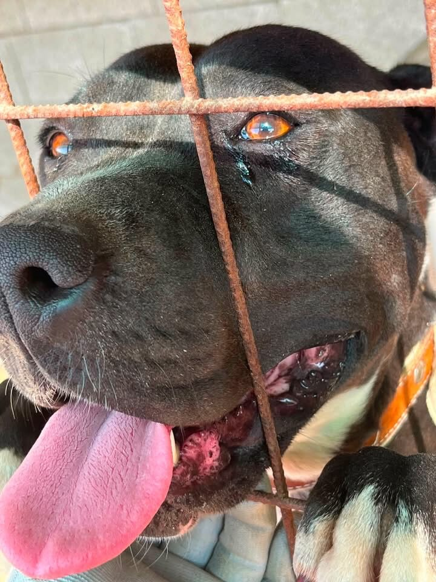
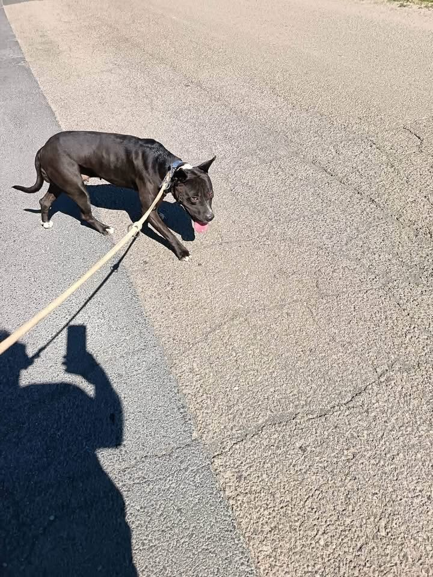
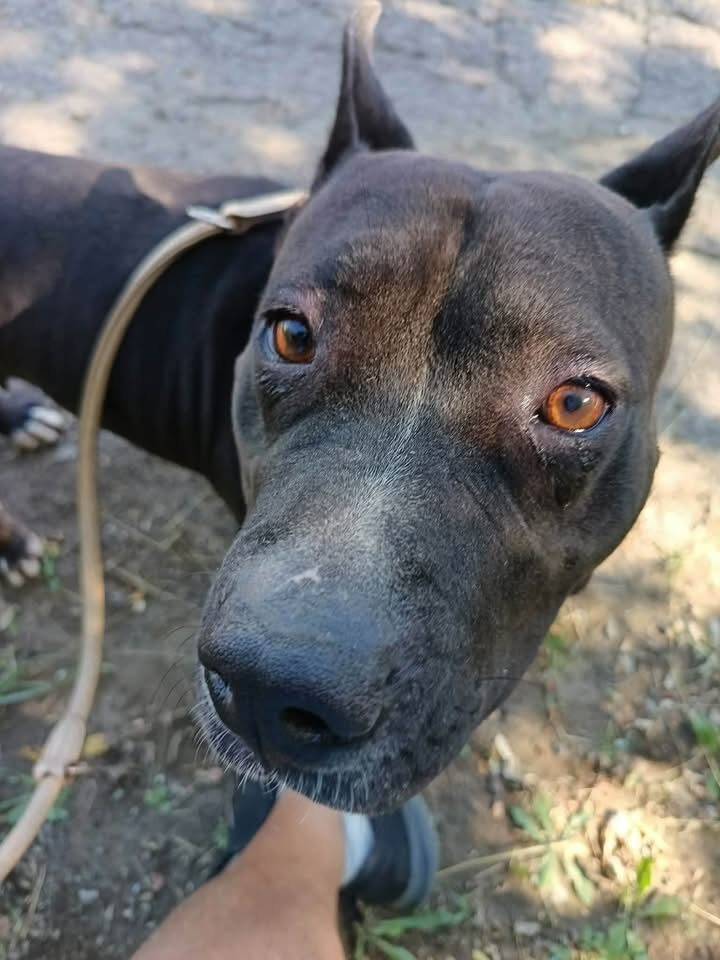
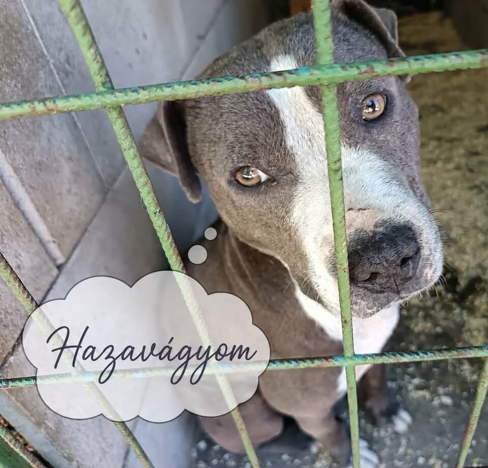
Nekem a szabadság hetente 15 perc.
Hiszed vagy sem, mindegyik képen én vagyok. Az egyiken a tekintetem árulja el, milyen bánatos a szívem a rácsok mögött – ezek a mindennapjaim. A másik fotón pedig csak úgy ragyogok a boldogságtól, amikor végre elhagyhatom a kennelt. Hetente egyszer, mindössze 15 percre.
A sétáltatóim szerint öröm velem útnak indulni, mert szépen és türelmesen viselkedem. Amikor kinyílik a kennel ajtaja, nem rontok ki, hanem nyugodtan megvárom, amíg rám kerül a póráz – pedig sejtheted, mennyire várom azt a rövid kis szabadságot.
A kétlábúakat egytől egyig imádom, az eddig megismert kutyák pedig mind a pajtásaim lettek.
Lakásba is szívesen költöznék. Egy udvaros házban is boldog lennék, ha szabadon járhatnék ki-be, az éjszakákat pedig kedvem szerint bent, a közeledben tölthetném.
Ha kezdő gazdi vagy, és megtetszettem, bátran jelentkezz! Csak gondold át jól, mert én egy életre költöznék hozzád. A többit majd együtt megtanuljuk.
Ivartalanítási kötelezettséggel fogadhatsz örökbe. Ha ennek költsége akadályt jelentene, még gyűjtést is segítenek szervezni, hogy semmi ne álljon a boldogságom útjába.
Érdeklődöm Koda irántIch bin Koda. Für mich bedeutet Freiheit 15 Minuten pro Woche.
Ob du es glaubst oder nicht: Auf beiden Bildern bin ich zu sehen. Auf dem einen verrät mein Blick, wie traurig mein Herz hinter den Gitterstäben ist. Auf dem anderen strahle ich vor Glück, weil ich den Zwinger endlich verlassen darf – einmal pro Woche, für nur 15 Minuten.
Meine Gassigänger sagen, dass Spaziergänge mit mir eine Freude sind. Wenn sich die Zwingertür öffnet, stürme ich nicht hinaus, sondern warte ruhig, bis die Leine angelegt ist.
Ich bin etwa zwei Jahre alt und ein Rüde. Menschen liebe ich sehr, und die Hunde, die ich bisher kennengelernt habe, wurden meine Freunde.
Mit Katzen funktioniert es jedoch nicht. Deshalb suche ich ein Zuhause ohne Katzen.
Ich könnte auch in einer Wohnung leben. In einem Haus mit Garten wäre ich ebenfalls glücklich, wenn ich frei hinein- und hinausgehen und die Nächte nach Wunsch drinnen in deiner Nähe verbringen dürfte.
Auch wenn du noch keine Hundeerfahrung hast, darfst du dich gerne melden. Wichtig ist nur, dass du die Adoption gut überdenkst, denn ich möchte für mein ganzes Leben bei dir einziehen.
Ich werde nur mit Kastrationsverpflichtung vermittelt. Sollten die Kosten ein Hindernis sein, kann bei der Organisation einer Spendensammlung geholfen werden.
📍 Salgótarján, Ungarn
💬 Ansprechpartnerin: Bogner Henriett
☎️ +36 20 583 0511
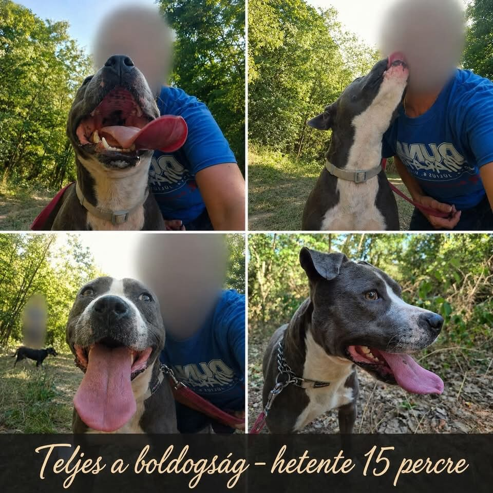
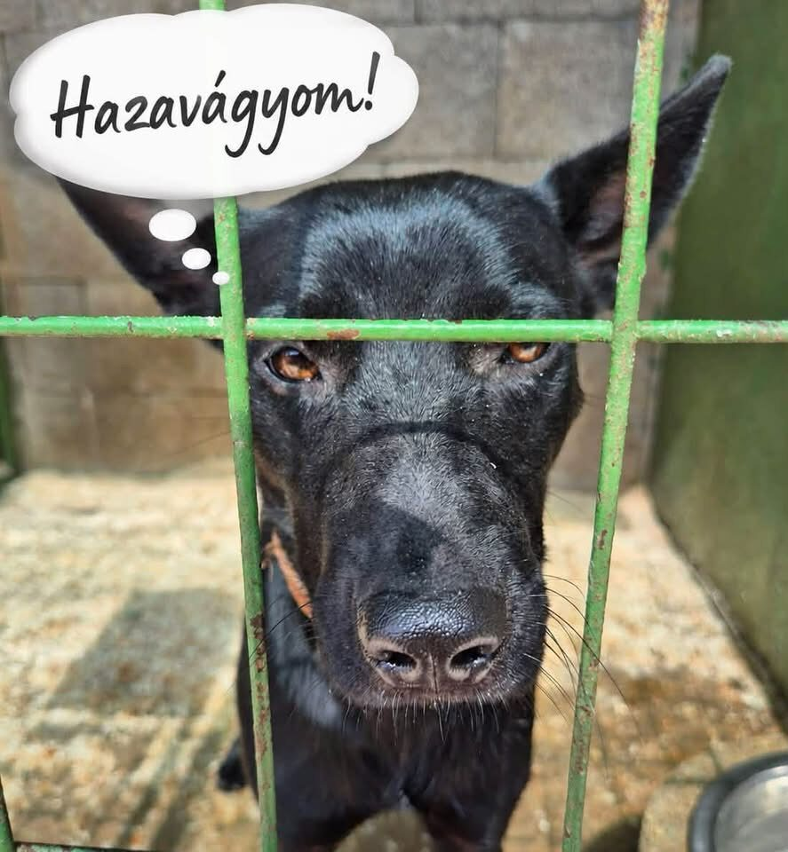
„Hazaviszlek!”
❤️ A füleim már teljes méretűek, a bátorságom még növésben van. ❤️
Sinka vagyok. Először talán a füleimet veszed észre – nem csoda, elég komoly felszereléssel érkeztem. Aztán meglátod azt is, hogy bár eleinte félénken méregetlek, valójában nagyon szeretnék megbarátkozni veled.
Az előéletemről semmit sem tudnak. Azt viszont már igen, hogy imádom, ha megsimogatnak, a sétáért pedig egyenesen rajongok. Pórázon nagyon szépen közlekedem, de ne tévesszen meg az illedelmes viselkedésem: rengeteg energiám van.
Olyan gazdit keresek, aki nemcsak a füleimbe szeret bele, hanem bírja is velem a tempót. Aki szeret sétálni, kirándulni, mozogni, és örülne egy aktív, sportos kutyának maga mellett.
Szükség esetén egyedül hagyhatsz, bár kezdetben valószínűleg egy biztonságos kennelre lesz szükségem. Lakásban is élhetek, ha mindennap megkapom a szükséges mozgást és foglalkozást. Kinti-benti tartásban is boldog lennék, szabad ki-be járással és benti alvással.
Ivartalanítási kötelezettséggel fogadhatsz örökbe. Ha ennek költsége akadályt jelentene, még gyűjtést is segítenek szervezni, hogy semmi ne álljon a boldogságom útjába.
Körülbelül két-három hónapja várok. Nem tudom, honnan jöttem, de nagyon szeretném megtudni, hová tartozom.
Érdeklődöm Sinka irántZwei riesige Ohren warten auf den schönsten Satz der Welt: „Ich nehme dich mit nach Hause!”
Ich bin Sinka. Zuerst fallen dir wahrscheinlich meine Ohren auf – kein Wunder, davon habe ich eine beeindruckende Ausstattung mitbekommen. Dann wirst du sehen, dass ich dich anfangs zwar schüchtern beobachte, aber sehr gerne Freundschaft mit dir schließen möchte.
Über meine Vergangenheit ist nichts bekannt. Man weiß aber bereits, dass ich Streicheleinheiten liebe und für Spaziergänge zu begeistern bin. An der Leine laufe ich sehr schön, doch lass dich von meinem höflichen Verhalten nicht täuschen: Ich habe jede Menge Energie.
Ich suche einen Menschen, der sich nicht nur in meine Ohren verliebt, sondern auch mit meinem Tempo mithalten kann – jemanden, der gerne spazieren geht, wandert und sich bewegt und einen aktiven, sportlichen Hund an seiner Seite haben möchte.
Mit anderen Hunden komme ich gut zurecht. Kinder habe ich bisher noch nicht kennengelernt, deshalb muss dies bei einem persönlichen Treffen getestet werden.
Bei Bedarf kann ich zeitweise allein bleiben, wobei ich anfangs wahrscheinlich einen sicheren Kennel oder eine sichere Box brauche. Ich kann in einer Wohnung leben, wenn ich täglich genügend Bewegung und Beschäftigung bekomme. Auch eine Haltung mit freiem Zugang zwischen Haus und Garten wäre geeignet, sofern ich drinnen schlafen darf.
Ich bin etwa eineinhalb bis zwei Jahre alt, klein bis mittelgroß, gesund, gegen Tollwut geimpft und gechippt.
Ich werde nur mit Kastrationsverpflichtung vermittelt. Sollten die Kosten dafür ein Hindernis sein, helfen die Ehrenamtlichen sogar dabei, eine Spendensammlung zu organisieren, damit meinem Glück nichts im Wege steht.
Seit ungefähr zwei bis drei Monaten warte ich. Ich weiß nicht, woher ich komme, aber ich möchte endlich erfahren, wohin ich gehöre.
📍 Salgótarján, Ungarn
💬 Ansprechpartnerin: Bogner Henriett
☎️ +36 20 583 0511
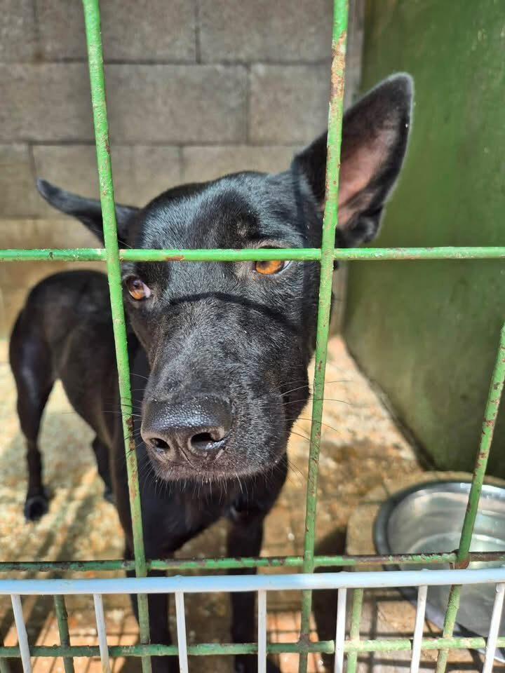
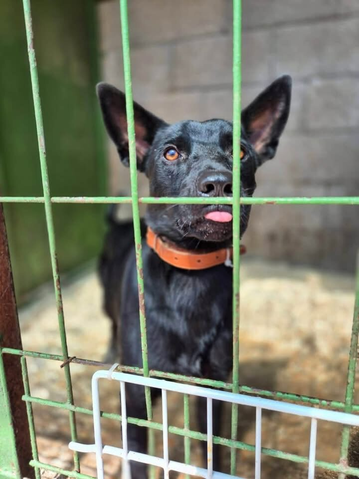
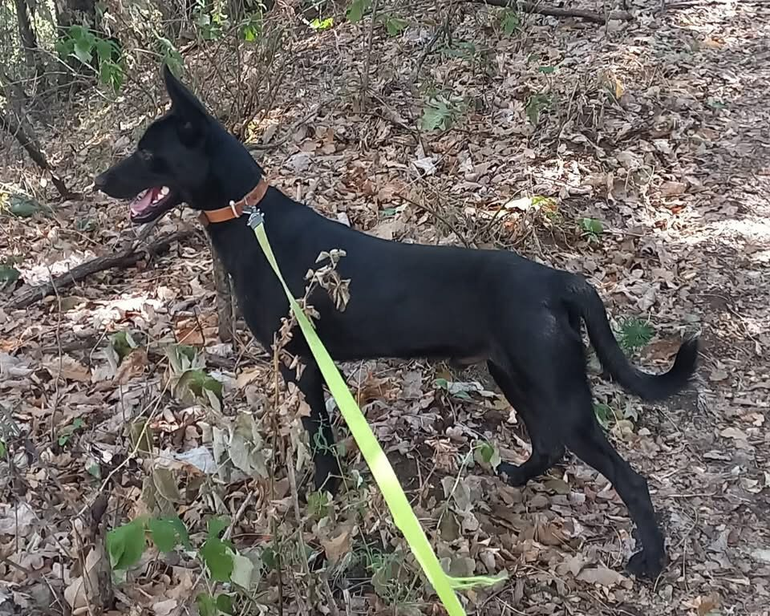
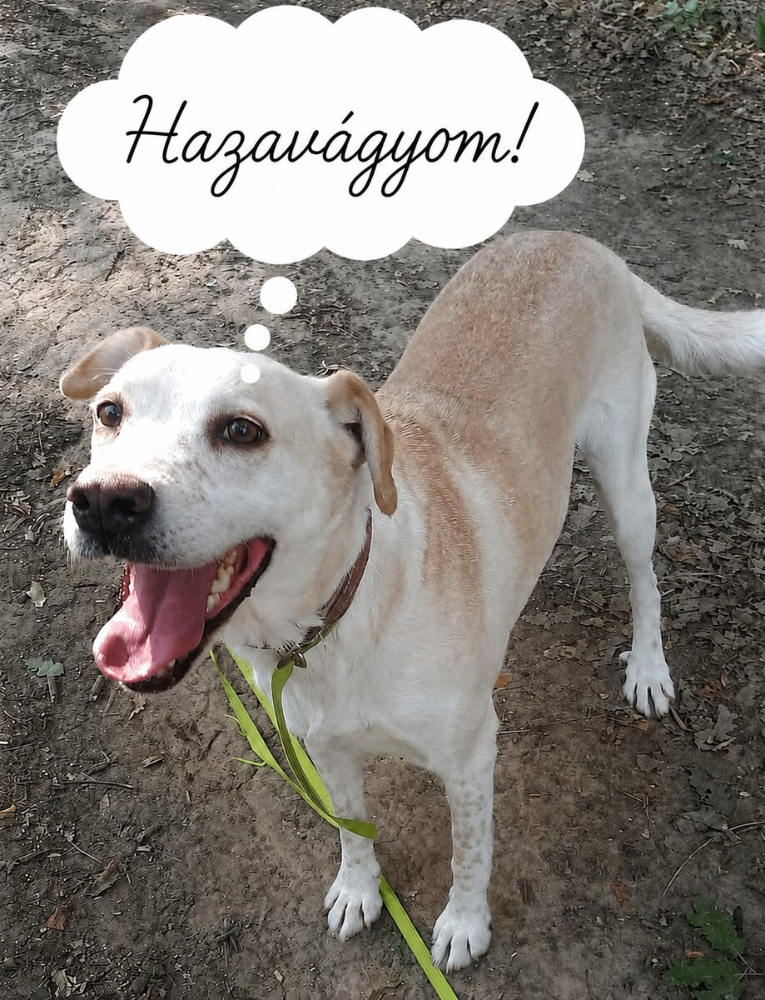
Ha akarod, megszámolhatod a pöttyeimet!
Szia, Félix vagyok!
Mielőtt megkérdeznéd: nem, az orrom és a mellső lábaim nem maszatosak. Azok bizony szeplők. Saját, külön bejáratú pöttyök – és ha akarod, megszámolhatod őket. Én már próbáltam, de nem látok elég jól odáig. 😊
Körülbelül egy hónapja kutyabefogó bottal fogtak be. Ezután úgy döntöttem, jobb lesz óvatosnak lenni mindennel, aminek keze van.
A telepen két biztonságosnak tűnő helyet választottam magamnak: a kennel sarkát és a kutyaház tetejét. Hol ide húzódtam, hol oda ültem fel. Egy hónapon keresztül szinte meg sem mozdultam.
Így nehéz volt észrevenni, hogy a félelem alatt valójában egy egészen más Félix lakik.
A hétvégén aztán pórázt kaptam, és életemben először elindultam sétálni a telepről. Eleinte minden lépést alaposan megfontoltam. Aztán rájöttem, hogy most nem befogni akarnak – csak velem lenni.
És ekkor előbújtam saját magamból.
Nézelődtem, érdeklődtem, feloldódtam, és boldog voltam. Kiderült, hogy a kutyaház tetején üldögélő komoly megfigyelő valójában tündéri, bújós és kifejezetten jó fej kutya.
Legalábbis ezt mondják rólam. Én csak annyit teszek hozzá, hogy simogatással könnyen ellenőrizhető. 😊
Ivartalanítási kötelezettséggel fogadhatsz örökbe. Ha ennek költsége akadályt jelentene, még gyűjtést is segítenek szervezni, hogy semmi ne álljon a boldogságom útjába.
Érdeklődöm Félix irántIch bin Sommersprossen-Félix – wenn du möchtest, darfst du meine Punkte zählen!
Bevor du fragst: Nein, meine Nase und meine Vorderbeine sind nicht schmutzig. Das sind Sommersprossen. Meine ganz persönlichen Punkte – und wenn du möchtest, darfst du sie zählen. Ich habe es selbst versucht, kann aber leider nicht gut genug bis dorthin sehen. 😊
Vor ungefähr einem Monat wurde ich mit einer Fangstange eingefangen. Danach beschloss ich, bei allem vorsichtig zu sein, was Hände hat.
In der Auffangstation suchte ich mir zwei Orte aus, die mir sicher erschienen: die Ecke meines Zwingers und das Dach meiner Hundehütte. Mal verkroch ich mich hier, mal saß ich dort oben. Einen ganzen Monat lang bewegte ich mich fast nicht.
So war es schwer zu erkennen, dass unter meiner Angst eigentlich ein ganz anderer Félix steckt.
Am Wochenende bekam ich dann eine Leine angelegt und durfte zum ersten Mal zu einem Spaziergang aus der Auffangstation. Anfangs überlegte ich mir jeden Schritt ganz genau. Dann verstand ich, dass man mich diesmal nicht einfangen wollte – jemand wollte einfach nur bei mir sein.
Und plötzlich kam ich aus mir heraus.
Ich schaute mich um, wurde neugierig, entspannte mich und war glücklich. Es stellte sich heraus, dass der ernste Beobachter auf dem Hundehüttendach in Wirklichkeit ein süßer, verschmuster und ausgesprochen sympathischer Hund ist.
Das sagen jedenfalls die Menschen über mich. Ich möchte nur hinzufügen: Mit Streicheleinheiten lässt sich das ganz leicht überprüfen. 😊
Ich suche einen Menschen, der mich nicht drängt, wenn ich anfangs noch vorsichtig bin. Einen Menschen, der versteht, dass die Angst nicht mein Wesen ist – sondern nur die Erinnerung an das, was mir passiert ist.
Ich werde nur mit Kastrationsverpflichtung vermittelt. Sollten die Kosten dafür ein Hindernis sein, helfen die Ehrenamtlichen sogar dabei, eine Spendensammlung zu organisieren, damit meinem Glück nichts im Wege steht.
📍 Städtische Auffangstation Salgótarján, Ungarn
💬 Ansprechpartnerin: Bogner Henriett
☎️ +36 20 583 0511
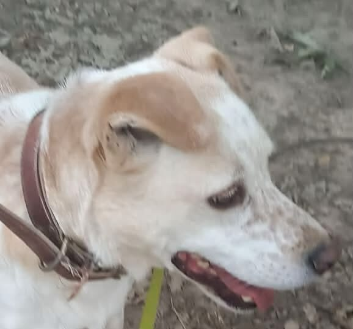
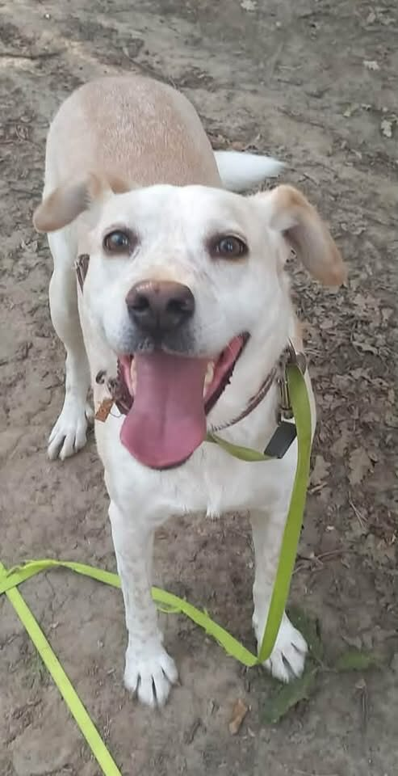
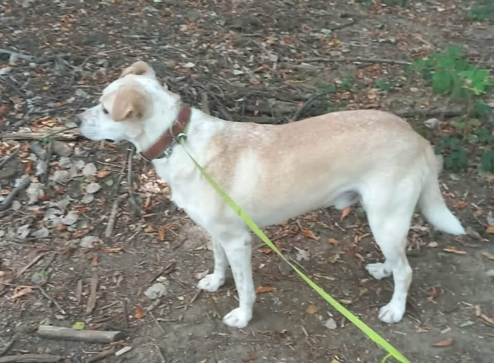
A Hazavágyók sorozat mind a kilenc adatlapja elkészült. 🐾
Te is életet menthetsz
Nem csak pénzzel lehet segíteni. Az időd, a figyelmed és egy megosztás is valódi változást hozhat.
Adj végleges, biztonságos otthont.
Adj átmeneti otthont a gazdikeresés idejére.
Segíts sétáltatással, szállítással, fotózással vagy posztírással.
Segíts az ellátás, az élelem és az ivartalanítás költségeiben.
Kapcsolat
A hivatalos elérhetőségeket és támogatási adatokat hamarosan feltöltjük.